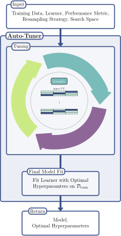
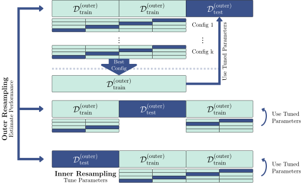

![Diagram showing 13 boxes representing model-agnostic HPO. On the top are two boxes, one that says "Search Space" and the other "Tuner", these are connected by a line to "Propose Hyperparameter Configurations". That box has an arrow pointing towards another box "Evaluate by Resampling", which has four blue boxes pointing towards it "Task", "Learner", "Resampling", and "Measure". "Evaluate by Resampling" has one line below it connected to "Objective", and an arrow to the right connected to "Terminator". This "Terminator" box has an arrow pointing down to "Optimal Hyperparameter Configuration" and right to "Update Tuner". Finally the "Update Tuner" box has a line below it connecting to "Archive" and an arrow above it connecting back to "Propose Hyperparameter Configurations".](Figures/mlr3book_figures-9.svg)
4 Hyperparameter Optimization
Marc Becker
Ludwig-Maximilians-Universität München
Lennart Schneider
Ludwig-Maximilians-Universität München, and Munich Center for Machine Learning (MCML)
Sebastian Fischer
Ludwig-Maximilians-Universität München
Machine learning algorithms usually include parameters and hyperparameters. Parameters are the model coefficients or weights or other information that are determined by the learning algorithm based on the training data. In contrast, hyperparameters, are configured by the user and determine how the model will fit its parameters, i.e., how the model is built. Examples include setting the number of trees in a random forest, penalty settings in support vector machines, or the learning rate in a neural network.
Hyperparameters
The goal of hyperparameter optimization (HPO, see sec-model-tuning) or model tuning is to find the optimal configuration of hyperparameters of a machine learning algorithm for a given task. There is no closed-form mathematical representation (nor analytic gradient information) for model agnostic HPO. Instead, we follow a black-box optimization approach: a machine learning algorithm is configured with values chosen for one or more hyperparameters, this algorithm is then evaluated (using a resampling method) and its performance is measured. This process is repeated with multiple configurations and finally the configuration with the best performance is selected. HPO closely relates to model evaluation (sec-performance) as the objective is to find a hyperparameter configuration that optimizes the generalization performance. Broadly speaking, we could think of finding the optimal model configuration in the same way as selecting a model from a benchmark experiment, where in this case each model in the experiment is the same algorithm but with different hyperparameter configurations. For example, we could benchmark three support vector machines (SVMs) with three difference cost values. However, human trial-and-error is time-consuming, subjective and often biased, error-prone, and computationally inefficient. Instead, many sophisticated hyperparameter optimization methods (sec-tuner) (or ‘tuners’) have been developed over the past few decades for robust and efficient HPO. Besides simple approaches such as a random search or grid search, most hyperparameter optimization methods employ iterative techniques that propose different configurations over time, often exhibiting adaptive behavior guided towards potentially optimal hyperparameter configurations. These methods continually propose new configurations until a termination criterion is met, at which point the optimal configuration is returned. This iterative approach is depicted in a typical optimization loop as shown in Figure (Figure fig-optimization-loop). For more general details on HPO and more theoretical background, we recommend Bischl et al. (2023) and Feurer and Hutter (2019).
Hyperparameter Optimization
4.1 Model Tuning
mlr3tuning is the hyperparameter optimization package of the mlr3 ecosystem. At the heart of the package are the R6 classes
-
TuningInstanceSingleCrit, which is used to construct a tuning ‘instance’, describe the optimization problem, and store the results; and -
Tunerwhich is used to configure and run optimization algorithms.
In this section, we will cover these classes as well as other supporting functions and classes. Throughout this section, we will look at optimizing an SVM classifier from e1071 on the sonar dataset as a running example.
4.1.1 Learner and Search Space
The tuning process begins by deciding which hyperparameters to tune and what range to tune them over. The first place to start is therefore picking a learner and looking at the possible hyperparameters to tune with $param_set:
as.data.table(lrn("classif.svm")$param_set)[, .(id, class, lower, upper, nlevels)] id class lower upper nlevels
1: cachesize ParamDbl -Inf Inf Inf
2: class.weights ParamUty NA NA Inf
3: coef0 ParamDbl -Inf Inf Inf
4: cost ParamDbl 0 Inf Inf
5: cross ParamInt 0 Inf Inf
---
12: nu ParamDbl -Inf Inf Inf
13: scale ParamUty NA NA Inf
14: shrinking ParamLgl NA NA 2
15: tolerance ParamDbl 0 Inf Inf
16: type ParamFct NA NA 2Given infinite resources, we could tune all hyperparameters jointly, but in reality that is not possible, so usually only a subset of hyperparameters can be tuned. This subset is referred to as the search space or tuning space. In this example we will tune the numeric regularization and kernel width hyperparameters, cost and gamma; see the help page for e1071::svm() for full details on the model implementation including hyperparameters. In practice, search spaces are usually more complex and can require expert knowledge to define them. sec-defining-search-spaces provides more detailed insight into the creation of tuning spaces, including using mlr3tuningspaces to load search spaces that have been established in published scientific articles.
Search Space
Tip
In rare cases parameter sets may include hyperparameters that cannot be tuned. These will usually be ‘technical’ (or ‘control’) parameters that provide information about how the model is being fit but do not control the training process itself, for example the verbose hyperparameter in lrn("classif.ranger") controls how much information is displayed to the user during training.
For numeric hyperparameters (we will explore others later) one must specify the bounds to tune over. We do this by constructing a learner and using to_tune() to set the lower and upper limits for the parameters we want to tune. This function allows us to mark the hyperparameter for subsequent tuning in the specified range.
learner = lrn("classif.svm",
type = "C-classification",
kernel = "radial",
cost = to_tune(1e-1, 1e5),
gamma = to_tune(1e-1, 1)
)
learner<LearnerClassifSVM:classif.svm>
* Model: -
* Parameters: type=C-classification, kernel=radial,
cost=<RangeTuneToken>, gamma=<RangeTuneToken>
* Packages: mlr3, mlr3learners, e1071
* Predict Types: [response], prob
* Feature Types: logical, integer, numeric
* Properties: multiclass, twoclassHere we have constructed a classification SVM, lrn("classif.svm"), selected the type of model as "C-classification", set the kernel to "radial", and specified that we plan to tune the cost and gamma parameters over the range \([0.1,100000]\) and \([0.1,1]\) respectively (though these are usually tuned on a log scale, see sec-logarithmic-transformations). Note that calling $train() on a learner with a tune token (e.g., cost=<RangeTuneToken>) will throw an error.
Now we have decided which hyperparameters to tune, we must now specify when to stop the tuning process.
4.1.2 Terminator
mlr3tuning includes many methods to specify when to terminate an algorithm (Table tbl-terms), which are implemented in Terminator classes. Terminators are stored in the mlr_terminators dictionary and are constructed with the sugar function trm().
| Terminator | Function call and default parameters |
|---|---|
| Clock Time | trm("clock_time", stop_time = "2022-11-06 08:42:53 CET") |
| Combo | trm("combo", terminators = list(run_time_100, evals_200, any = TRUE)) |
| None | trm("none") |
| Number of Evaluations | trm("evals", n_evals = 500) |
| Performance Level | trm("perf_reached", level = 0.1) |
| Run Time | trm("run_time", secs = 100) |
| Stagnation | trm("stagnation", iters = 5, threshold = 1e-5) |
The most commonly used terminators are those that stop the tuning after a certain time (trm("run_time")) or the number of evaluations (trm("evals")). Choosing a runtime is often based on practical considerations and intuition. Using a time limit can be important on compute clusters where a maximum runtime for a compute job may need to be specified. The trm("perf_reached") terminator stops the tuning when a certain performance level is reached, which can be helpful if a certain performance is seen as sufficient for the practical use of the model, however if this is set too optimistically the tuning may never terminate. The trm("stagnation") terminator stops when no progress is made for a number of iterations. The minimum progress is specified by the threshold argument, note this can be difficult to select as the optimization could stop too soon for complex search spaces despite room for (possibly significant) improvement. trm("none") is used for tuners that control termination themselves. Finally, any of these terminators can be freely combined with the trm("combo") terminator, which can be used to specify if HPO finishes when any (any = TRUE) terminator is triggered or when all (any = FALSE) are triggered.
4.1.3 Tuning Instance with ti
The tuning instance collects together the tuner-agnostic information required to optimize a model, i.e., all information about the tuning process, except for the tuning algorithm itself. This includes the task to tune over, the learner to tune, the resampling method and measure used to analytically compare hyperparameter optimization configurations, and the terminator to determine when the measure has been optimized ‘enough’.
A tuning instance can be constructed manually with the ti() function, or automated (sec-simplified-tuning) with the tune() function. We cover the manual approach first as this allows finer control of tuning and a more nuanced discussion about the design and use of mlr3tuning.
Tuning Instance
Continuing our example, we will construct a single-objective tuning problem (i.e., tuning over one measure) by using the ti() function to create a TuningInstanceSingleCrit, we will return to multi-objective tuning in sec-multi-metrics-tuning.
For this example we will use three-fold CV and optimize the classification error measure. Note that in the next section we will continue our example with a grid search tuner, so we select trm("none").
tsk_sonar = tsk("sonar")
learner = lrn("classif.svm",
cost = to_tune(1e-1, 1e5),
gamma = to_tune(1e-1, 1),
kernel = "radial",
type = "C-classification"
)
instance = ti(
task = tsk_sonar,
learner = learner,
resampling = rsmp("cv", folds = 3),
measures = msr("classif.ce"),
terminator = trm("none")
)
instance<TuningInstanceSingleCrit>
* State: Not optimized
* Objective: <ObjectiveTuning:classif.svm_on_sonar>
* Search Space:
id class lower upper nlevels
1: cost ParamDbl 0.1 1e+05 Inf
2: gamma ParamDbl 0.1 1e+00 Inf
* Terminator: <TerminatorNone>4.1.4 Tuner
With all the pieces of our tuning problem assembled, we can now decide how to tune our model. There are multiple Tuner classes in mlr3tuning, which implement different HPO (or more generally speaking black-box optimization) algorithms (Table tbl-tuners).
| Tuner | Function call | Package |
|---|---|---|
| Random Search | tnr("random_search") |
mlr3tuning |
| Grid Search | tnr("grid_search") |
mlr3tuning |
| Bayesian Optimization | tnr("mbo") |
mlr3mbo |
| CMA-ES | tnr("cmaes") |
adagio |
| Iterative Racing | tnr("irace") |
irace |
| Hyperband | tnr("hyperband") |
mlr3hyperband |
| Generalized Simulated Annealing | tnr("gensa") |
GenSA |
| Nonlinear Optimization | tnr("nloptr") |
nloptr |
Search strategies
Grid search and random search (Bergstra and Bengio 2012) are the most basic algorithms and are often selected first in initial experiments. The idea of grid search is to exhaustively evaluate every possible combination of given hyperparameter values. Categorical hyperparameters are usually evaluated over all possible values they can take while values to consider for numeric hyperparameters are determined by a given resolution, which is the number of distinct values to try per hyperparameter. Numeric and integer hyperparameters are spaced equidistantly in their box constraints (upper and lower bounds), and categorical hyperparameters usually have all possible values considered. Random search involves randomly selecting values for each hyperparameter independently from a pre-specified distribution, usually uniform. Both methods are non-adaptive, which means each proposed configuration ignores the performance of previous configurations. Due to their simplicity, both grid search and random search can handle mixed search spaces (i.e., hyperparameters can be numeric, integer, or categorical) as well as hierarchical search spaces (sec-defining-search-spaces).
Adaptive algorithms
Adaptive algorithms learn from previously evaluated configurations to find good configurations more quickly, examples in mlr3 include Bayesian optimization (also called model-based optimization), Covariance Matrix Adaptation Evolution Strategy (CMA-ES), Iterative Racing, and Hyperband.
Bayesian optimization (sec-bayesian-optimization) (e.g., Snoek, Larochelle, and Adams 2012) describes a family of iterative optimization algorithms that use a surrogate model to approximate the unknown function that is to be optimized – in HPO the mapping from a hyperparameter configuration to the estimated generalization performance. Any Bayesian optimization algorithm starts by observing an initial design of observations and then trains the surrogate model on all data points and performance values observed so far. The algorithm then uses an acquisition function that usually relies on both the mean and variance prediction of the surrogate model to determine which points of the search space are promising candidates that should be evaluated next. By optimizing the acquisition function itself, the next candidate point is chosen for evaluation, evaluated and the process repeats itself by re-fitting or updating the surrogate model on the updated set of observed data points. Bayesian optimization is very flexible (e.g. mixed and hierarchical search spaces can easily be handled by choosing a suitable surrogate model), and highly sample efficient, i.e., compared to other algorithms, much less function evaluations are needed to find good configurations. On the downside, the optimization overhead of Bayesian optimization is comparably large (e.g., in each iteration, training of the surrogate model and optimizing the acquisition function) and therefore really shines in the context of very costly function evaluations and tight optimization budget.
CMA-ES (Hansen and Auger 2011) is an evolutionary strategy that maintains a probability distribution over candidate points, with the distribution represented by a mean vector and covariance matrix. A new set of candidate points is generated by sampling from this distribution, with the probability of each candidate being proportional to its performance. The covariance matrix is adapted over time to reflect the performance landscape.
Racing algorithms work by iteratively discarding configurations that show poor performance, as determined by statistical tests. Iterative Racing (López-Ibáñez et al. 2016) starts by ‘racing’ down an initial population of randomly sampled configurations from a parameterized density and then uses the surviving configurations of the race to stochastically update the density of the subsequent race to focus on promising regions of the search space, and so on.
Multi-fidelity HPO is an adaptive method that leverages the predictive power of computationally cheap lower fidelity evaluations (i.e., poorer quality predictions such as those arising from neural networks with a small number of epochs) to improve the overall optimization efficiency. This concept is used in Hyperband (sec-hyperband), a popular multi-fidelity hyperparameter optimization algorithm that dynamically allocates increasingly more resources to promising configurations and terminates low-performing ones. Hyperband tends to outperform random search as the optimization budget is used much more efficiently.
Other implemented algorithms for numeric search spaces are Generalized Simulated Annealing (Xiang et al. 2013; Tsallis and Stariolo 1996) and various nonlinear optimization algorithms. These can be useful if evaluations are rather cheap as they require more function evaluations and are therefore less sample efficient than other sophisticated methods (e.g., bayesian optimization) but are more commonly used for general, numeric black-box optimization.
Choosing strategies
As a rule of thumb, if the search space is small and consists of categorical hyperparameters, a grid search may be able to exhaustively evaluate the entire search space in a reasonable time. However, grid search is generally not recommended due to the curse of dimensionality – the grid size ‘blows up’ very quickly as number of parameters to tune increases – and insufficient coverage of numeric search spaces. Grid search by construction also cannot evaluate a large number of unique values per hyperparameter, which is suboptimal when some hyperparameters have minimal impact on performance while others do.
In such scenarios, a random search is often a better choice as it considers more unique values per hyperparameter compared to grid search. Random search is also suitable for small optimization budgets and quick concept experiments. However, with larger optimization budgets, more guided optimization algorithms such as evolutionary strategies or Bayesian optimization tend to perform better and are more likely to result in peak performance. Evolutionary strategies are available in mlr3 via the miesmuschel package, however these will not be covered in this book.
When choosing between evolutionary strategies and Bayesian optimization, the cost of function evaluation is highly relevant. If hyperparameter configurations can be evaluated quickly, evolutionary strategies often find good configurations within a reasonable time frame. On the other hand, if model evaluations are time-consuming and the optimization budget is limited, Bayesian optimization is usually preferred, this will be covered in sec-bayesian-optimization.
Finally, in cases where the hyperparameter optimization problem involves a meaningful fidelity parameter (e.g., number of epochs, number of trees, number of boosting rounds) and optimization budget needs to be spent efficiently, multi-fidelity hyperparameter optimization algorithms like Hyperband may be worth considering. For further details on different tuners and practical recommendations, we refer to Bischl et al. (2023).
Tip
The $param_classes and $properties fields of a Tuner respectively provide information about which classes of hyperparameters can be handled and what properties the tuner can handle (e.g., hyperparameter dependencies (sec-defining-search-spaces)):
tnr("random_search")$param_classes[1] "ParamLgl" "ParamInt" "ParamDbl" "ParamFct"tnr("random_search")$properties[1] "dependencies" "single-crit" "multi-crit" For our SVM example, we will use a grid search with a resolution of 5 for efficiency reasons here (in practice a larger resolution would be preferred). Recall that the resolution is the number of distinct values to try per hyperparameter, which means in our example the tuner will construct a 5x5 grid of 25 configurations of equally spaced points between the specified upper and lower bounds. All configurations will be tried by the tuner (in random order) until either all configurations are evaluated or the terminator (sec-terminator) signals that the budget is exhausted. For grid and random search tuners, the batch_size parameter controls how many configurations are evaluated at the same time (see sec-parallelization) and also determines how many configurations should be applied before the terminator should check if the termination criterion has been reached.
tuner = tnr("grid_search", resolution = 5, batch_size = 10)
tuner<TunerGridSearch>: Grid Search
* Parameters: resolution=5, batch_size=10
* Parameter classes: ParamLgl, ParamInt, ParamDbl, ParamFct
* Properties: dependencies, single-crit, multi-crit
* Packages: mlr3tuningThe resolution and batch_size parameters are termed control parameters, and other tuners will have other parameters that can be set, as with learners these are accessible with $param_set.
Control Parameters
tuner$param_set<ParamSet>
id class lower upper nlevels default value
1: batch_size ParamInt 1 Inf Inf <NoDefault[3]> 10
2: resolution ParamInt 1 Inf Inf <NoDefault[3]> 5
3: param_resolutions ParamUty NA NA Inf <NoDefault[3]> Whilst changing the control parameters of the tuner can improve optimal performance, it is likely the default settings will fit most needs.
Triggering the tuning process
Now that we have all our components, we can start the tuning process. To do this we simply pass the constructed TuningInstanceSingleCrit to the $optimize() method of the initialized Tuner, which triggers the hyperparameter optimization loop (Figure fig-optimization-loop).
tuner$optimize(instance) cost gamma learner_param_vals x_domain classif.ce
1: 25000 0.1 <list[4]> <list[2]> 0.2449The optimizer returns the best hyperparameter configuration and the corresponding performance, this information is also stored in instance$result. The first columns (here cost and gamma) will be named after the tuned hyperparameters and show the optimal values from the searched tuning spaces. The $learner_param_vals field lists the optimal hyperparameters from tuning, as well as the values of any other hyperparameters that were manually changed from the defaults, this is useful for onward model use (sec-analyzing-result).
instance$result$learner_param_vals[[1]]
[[1]]$kernel
[1] "radial"
[[1]]$type
[1] "C-classification"
[[1]]$cost
[1] 25000
[[1]]$gamma
[1] 0.1The $x_domain field contains the optimal values of the tuned hyperparameters, which is most useful in the context of hyperparameter transformations, which we will briefly turn to next.
Warning
A common mistake when tuning is to report the performance estimated on the resampling sets on which the tuning was performed (instance$result$classif.ce) as an estimate of the model’s performance. The correct method is to test the model on more unseen data, which can be efficiently performed with nested resampling, we will discuss this in sec-resample-overfitting.
4.1.5 Logarithmic Transformations
For many hyperparameters that have infinite (or very large) bounds, tuning on a logarithmic scale is more efficient than tuning on a linear scale. By example, consider sampling uniformly in the interval \([log(1e-5), log(1e5)]\) and then exponentiating the outcome:
The histograms below show how we are initially sampling within a narrow range (\([-11.5, 11.5]\)) then exponentiating results in the majority of points being relatively small but a few being very large.
![Histogram showing the distribution of uniformly sampled values from the interval [log(1e-5), log(1e5)]. The left plot shows the values on the linear scale sampled by the tuner between [-11.5,11.5] and the right plot shows the transformed values on the logarithmic scale between [1e-5, 1e5].](hyperparameter_optimization_files/figure-html/fig-logscale-1.png)
![Histogram showing the distribution of uniformly sampled values from the interval [log(1e-5), log(1e5)]. The left plot shows the values on the linear scale sampled by the tuner between [-11.5,11.5] and the right plot shows the transformed values on the logarithmic scale between [1e-5, 1e5].](hyperparameter_optimization_files/figure-html/fig-logscale-2.png)
To add this transformation to a hyperparameter we simply pass logscale = TRUE to to_tune().
learner = lrn("classif.svm",
cost = to_tune(1e-5, 1e5, logscale = TRUE),
gamma = to_tune(1e-5, 1e5, logscale = TRUE),
kernel = "radial",
type = "C-classification"
)
instance = ti(
task = tsk_sonar,
learner = learner,
resampling = rsmp("cv", folds = 3),
measures = msr("classif.ce"),
terminator = trm("none")
)
tuner$optimize(instance) cost gamma learner_param_vals x_domain classif.ce
1: 5.756 -5.756 <list[4]> <list[2]> 0.1394We can see from this example that using the log transformation improved our model training as classif.ce is smaller.
Note that the fields cost and gamma show the optimal values before transformation, whereas x_domain and learner_param_vals contain optimal values after transformation, it is these latter fields you would take forward for future model use.
instance$result$x_domain[[1]]
[[1]]$cost
[1] 316.2
[[1]]$gamma
[1] 0.003162In sec-search-space-scratch we will look at how to implement more complex, custom transformations to any hyperparameter or combination of hyperparameters. Now we will look at how to put everything into practice so we can make use of the tuned model (and the transformed hyperparameters).
4.1.6 Analyzing and Using the Result
Independently of whether you use ti() or tune(), or if you include transformations or not, the output is the same and the instance’s archive lists all evaluated hyperparameter configurations:
as.data.table(instance$archive)[, .(cost, gamma, classif.ce)] cost gamma classif.ce
1: -11.513 -5.756 0.4665
2: -5.756 -11.513 0.4665
3: -5.756 11.513 0.4665
4: 0.000 -5.756 0.2308
5: 5.756 -5.756 0.1394
---
21: 0.000 5.756 0.4665
22: 0.000 11.513 0.4665
23: 5.756 11.513 0.4665
24: 11.513 -11.513 0.2161
25: 11.513 0.000 0.4665Each row of the archive is a different evaluated configuration. The columns here show the tested configurations (before transformation) and the chosen performance measure. We can also manually inspect the archive to determine other important features such as time of evaluation, model runtime, and any errors or warnings that occurred during tuning.
as.data.table(instance$archive)[1:3,
.(timestamp, runtime_learners, errors, warnings)] timestamp runtime_learners errors warnings
1: 2023-06-18 11:48:12 0.030 0 0
2: 2023-06-18 11:48:12 0.029 0 0
3: 2023-06-18 11:48:12 0.030 0 0Another powerful feature of the instance is that we can score the internal ResampleResults on a different performance measure, for example looking at false negative rate and false positive rate as well as classification error:
as.data.table(instance$archive,
measures = msrs(c("classif.fpr", "classif.fnr")))[1:5 ,
.(cost, gamma, classif.ce, classif.fpr, classif.fnr)] cost gamma classif.ce classif.fpr classif.fnr
1: -11.513 -5.756 0.4665 1.0000 0.00000
2: -5.756 -11.513 0.4665 1.0000 0.00000
3: -5.756 11.513 0.4665 1.0000 0.00000
4: 0.000 -5.756 0.2308 0.3186 0.14997
5: 5.756 -5.756 0.1394 0.2089 0.08056You can access all the resamplings in a BenchmarkResult object with instance$archive$benchmark_result.
Finally, to visualize the results, you can use the autoplot implemented in mlr3viz (Figure fig-surface). In this example we can observe one of the flaws (by design) in grid search, despite testing 25 configurations, we only saw 5 unique values for each hyperparameter.
autoplot(instance, type = "surface")
cost and gamma. Bright yellow regions represent the model performing worse and dark blue performing better. We can see that high cost values and low gamma values achieve the best performance. Note that we should not directly infer the performance of new unseen values from the heatmap since it is only an interpolation based on a surrogate model (regr.ranger). However, we can see the general interaction between the hyperparameters.Training an optimized model
Once the learner has been tuned we can start to use it like any other model in the mlr3 universe. To do this we simply construct a new learner with the same underlying algorithm and set the learner hyperparameters to the optimal configuration:
lrn_svm_tuned = lrn("classif.svm")
lrn_svm_tuned$param_set$values = instance$result_learner_param_valsNow we can train the learner on the full dataset and we are ready to make predictions. The trained model can then be used to predict new, external data:
lrn_svm_tuned$train(tsk_sonar)$model
Call:
svm.default(x = data, y = task$truth(), type = "C-classification",
kernel = "radial", gamma = 0.00316227766016838, cost = 316.227766016838,
probability = (self$predict_type == "prob"))
Parameters:
SVM-Type: C-classification
SVM-Kernel: radial
cost: 316.2
Number of Support Vectors: 93
4.2 Automating with tune and auto_tuner
In the previous section, we looked at constructing and manually putting together the components of HPO by creating a tuning instance using ti(), passing this to the tuner, and then calling $optimize() to start the tuning process. mlr3tuning includes two helper methods to simplify this process further.
The first helper function is tune(), which creates the tuning instance and calls $optimize() for you. You may prefer the manual method with ti() if you want to view and make changes to the instance before tuning.
tnr_grid_search = tnr("grid_search", resolution = 5, batch_size = 5)
lrn_svm = lrn("classif.svm",
cost = to_tune(1e-5, 1e5, logscale = TRUE),
gamma = to_tune(1e-5, 1e5, logscale = TRUE),
kernel = "radial",
type = "C-classification"
)
rsmp_cv3 = rsmp("cv", folds = 3)
msr_ce = msr("classif.ce")
tune(
tuner = tnr_grid_search,
task = tsk_sonar,
learner = lrn_svm,
resampling = rsmp_cv3,
measures = msr_ce
)$result cost gamma learner_param_vals x_domain classif.ce
1: 5.756 -5.756 <list[4]> <list[2]> 0.1444The other helper function is auto_tuner, which creates an object of class AutoTuner. The AutoTuner inherits from the Learner class and wraps all the information needed for tuning, which means you can treat a learner waiting to be optimized just like any other learner. Under the hood, the AutoTuner essentially runs tune() on the data that is passed to the model when $train() is called and then sets the learner parameters with the optimal configurations.
at = auto_tuner(
tuner = tnr_grid_search,
learner = lrn_svm,
resampling = rsmp_cv3,
measure = msr_ce
)
at<AutoTuner:classif.svm.tuned>
* Model: list
* Search Space:
<ParamSet>
id class lower upper nlevels default value
1: cost ParamDbl -11.51 11.51 Inf <NoDefault[3]>
2: gamma ParamDbl -11.51 11.51 Inf <NoDefault[3]>
Trafo is set.
* Packages: mlr3, mlr3tuning, mlr3learners, e1071
* Predict Type: response
* Feature Types: logical, integer, numeric
* Properties: multiclass, twoclass
And we can now call $train(), which will first tune the hyperparameters in the search space listed above before fitting the optimal model.
split = partition(tsk_sonar)
at$train(tsk_sonar, row_ids = split$train)
at$predict(tsk_sonar, row_ids = split$test)$score()classif.ce
0.2029 The AutoTuner contains a tuning instance that can be analyzed like any other instance.
at$tuning_instance$result cost gamma learner_param_vals x_domain classif.ce
1: 5.756 -5.756 <list[4]> <list[2]> 0.1727We could also pass the AutoTuner to resample() and benchmark(), which would result in a nested resampling, discussed next.
4.3 Nested Resampling
HPO requires additional resampling to reduce bias when estimating performance of the model. If the same data is used for determining the optimal configuration and the evaluation of the resulting model itself, the actual performance estimate of the model might be severely biased (Simon 2007). This is analogous to optimism of the training error described in James et al. (2013), which occurs when training error is taken as an estimate of out-of-sample performance.
Nested resampling separates model optimization from the process of estimating the performance of the tuned model by adding an additional resampling, i.e., while model performance is estimated using a resampling method in the ‘usual way’, tuning is then performed by resampling the resampled data (Figure fig-nested-resampling). For more details and a formal introduction to nested resampling the reader is referred to Bischl et al. (2023) and Simon (2007).
Nested Resampling

Figure fig-nested-resampling represents the following example of nested resampling:
- Outer resampling – Instantiate 3-fold CV to create different testing and training datasets.
- Inner resampling – Within the outer training data instantiate 4-fold CV to create different inner testing and training datasets.
- HPO – Tune the hyperparameters on the outer training set (large, light blue blocks) using the inner data splits.
- Training – Fit the learner on the outer training dataset using the optimal hyperparameter configuration obtained from the inner resampling (small blocks).
- Evaluation – Evaluate the performance of the learner on the outer testing data (large, dark blue block).
- Cross-validation – Repeat (2)-(5) for each of the three folds.
- Aggregation – Take the sample mean of the three performance values for an unbiased performance estimate.
The inner resampling produces generalization performance estimates for each configuration and selects the optimal configuration to be evaluated on the outer resampling. The outer resampling then produces generalization estimates for these optimal configurations. The result from the outer resampling can be used for comparison to other models trained and tested on the same outer folds.
Tip
Nested resampling is computationally expensive, three outer folds and four inner folds with a grid search of resolution 5 used to tune 2 parameters, results in 3*4*5*5 = 300 iterations of model training/testing. If you have the resources we recommend utilizing parallelization when tuning (sec-parallelization).
A common mistake is to try and use nested resampling as a method to select optimal model configurations. Nested resampling is a method to compare models and to estimate the generalization performance of a tuned model, however, this is the performance based on multiple different configurations (one from each outer fold) and not performance based on a single configuration (sec-resample-overfitting). If you are interested in identifying optimal configurations, then use tune()/ti() or auto_tuner() with $train().
4.3.1 Resampling an AutoTuner
Whilst the theory of nested resampling may seem complicated, it is all automated in mlr3tuning by simply passing an AutoTuner to resample() or benchmark(). Continuing with our previous example, we will use the auto-tuner to resample a support vector classifier with 3-fold CV in the outer-resampling and 4-fold CV in the inner resampling.
at = auto_tuner(
tuner = tnr_grid_search,
learner = lrn_svm,
resampling = rsmp("cv", folds = 4),
measure = msr_ce,
)
rr = resample(tsk_sonar, at, rsmp_cv3, store_models = TRUE)
rr<ResampleResult> with 3 resampling iterations
task_id learner_id resampling_id iteration warnings errors
sonar classif.svm.tuned cv 1 0 0
sonar classif.svm.tuned cv 2 0 0
sonar classif.svm.tuned cv 3 0 0Note that we set store_models = TRUE so that the AutoTuner models (fitted on the outer training data) are stored, which also enables investigation of the inner tuning instances. Whilst we used K-fold CV for both the inner and outer resampling strategy, you could use different resampling strategies (sec-resampling) and also different parallelization methods (sec-nested-resampling-parallelization).
The estimated performance of a tuned model is reported as the aggregated performance of all outer resampling iterations, which is an unbiased estimate of future model performance.
rr$aggregate()classif.ce
0.1589 In addition to the methods described in sec-resampling, extract_inner_tuning_results() and extract_inner_tuning_archives() return the optimal configurations (across all outer folds) and full tuning archives, respectively.
extract_inner_tuning_results(rr)[,
.(iteration, cost, gamma, classif.ce)] iteration cost gamma classif.ce
1: 1 11.51 -5.756 0.2174
2: 2 11.51 -5.756 0.2086
3: 3 11.51 -5.756 0.1796extract_inner_tuning_archives(rr)[1:3,
.(iteration, cost, gamma, classif.ce)] iteration cost gamma classif.ce
1: 1 -11.51 -11.513 0.5286
2: 1 -11.51 11.513 0.5286
3: 1 0.00 -5.756 0.29814.3.2 The Right (and Wrong) Way to Estimate Generalization Performance
This section covers advanced ML or technical details.
In this short section we will demonstrate with a brief example that only nested resampling with the $aggregate() method provides a reliable estimate of the model’s generalization performance.
We will do this by tuning and (un-nested) resampling a learner on training data and evaluating the in-sample performance, which is the performance of the best performing hyperparameter. Then we will compute the out-of-sample, generalization, performance, which is the performance of the tuned learner trained on the full dataset and evaluated on a test dataset. Finally, we will show how using nested resampling returns a good estimate of the generalization performance, even when only the training data is used.
In this experiment we tune several parameters from lrn("classif.xgboost"), in doing so we can simultaneously show that nested resampling returns the best estimate of the generalization performance and that the insample performance will be overly-optimistic if hyperparameters are ‘meta’-overfitting the data (we use the term ‘meta-overfitting’ as they are overfitting to a subset of the training data during resampling as opposed to the full training data). To best estimate the generalization performance we make use of the "moons" TaskGenerator. The TaskGenerator class is used when you want to simulate data for use in experiments, these are very useful in cases such as this experiment when you need access to an infinite number of datapoints to estimate quantities such as the generalization error.
We begin by loading our learner, task generator, and generating 100 training data points and 1,000,000 testing data points.
lrn_xgboost = lrn("classif.xgboost",
eta = to_tune(1e-4, 1, logscale = TRUE),
max_depth = to_tune(1, 20),
colsample_bytree = to_tune(1e-1, 1),
colsample_bylevel = to_tune(1e-1, 1),
lambda = to_tune(1e-3, 1e3, logscale = TRUE),
alpha = to_tune(1e-3, 1e3, logscale = TRUE),
subsample = to_tune(1e-1, 1)
)
tsk_moons = tgen("moons")
tsk_moons_train = tsk_moons$generate(100)
tsk_moons_test = tsk_moons$generate(1000000)Now we will tune the learner with respect to the classification error and use holdout resampling and random search with 700 evaluations, we compute the in-sample performance as the performance for the optimal hyperparameter configuration.
tnr_random = tnr("random_search")
rsmp_holdout = rsmp("holdout")
trm_evals700 = trm("evals", n_evals = 700)
instance = tune(
tuner = tnr_random,
task = tsk_moons_train,
learner = lrn_xgboost,
resampling = rsmp_holdout,
measures = msr_ce,
terminator = trm_evals700
)
insample = instance$result_yNext we compute the out-of-sample performance, which is the aggregate of scores over the outer resampling method (below we use 5-fold CV) using an AutoTuner:
# same setup as above
at = auto_tuner(
tuner = tnr_random,
learner = lrn_xgboost,
resampling = rsmp_holdout,
measure = msr_ce,
terminator = trm_evals700
)
outsample = resample(tsk_moons_train, at, rsmp("cv", folds = 5))$aggregate()And finally we estimate the generalization error by training the tuned learner (i.e., using the values from the instance above) on the full training data again and predicting on the test data.
lrn_xgboost_tuned = lrn("classif.xgboost")
lrn_xgboost_tuned$param_set$set_values(
.values = instance$result_learner_param_vals)
generalization = lrn_xgboost_tuned$train(tsk_moons_train)$predict(tsk_moons_test)$score()Now we can compare these three values:
round(c(generalization = as.numeric(generalization),
insample = as.numeric(insample),
outsample = as.numeric(outsample)), 2)generalization insample outsample
0.31 0.06 0.20 We find that the insample performance overestimates the model performance, which indicates meta-overfitting to the optimal hyperparameters. The out-of-sample performance from nested resampling provides a much better estimate of the generalization performance, despite the nested resampling only accessing 100 data points and not all 1,000,000.
4.4 More Advanced Search Spaces
Up until now we have only considered tuning overly simplistic search spaces limited to numeric hyperparameters. In this section we will first look at how to tune different scalar parameter classes with to_tune(), and then how to define your own search space with ParamSet to create more advanced search spaces that may include tuning over vectors, transformations, and handling parameter dependencies. Finally, we will consider how to access a database of standardized search spaces from the literature.
4.4.1 Scalar Parameter Tuning
The to_tune() function can be used to tune parameters of any class, whether they are scalar or vectors. To best understand this function, we will consider what is happening behind the scenes. When to_tune() is used in a learner, implicitly a ParamSet is created just for the tuning search space:
learner = lrn("classif.svm",
cost = to_tune(1e-1, 1e5),
gamma = to_tune(1e-1, 1),
kernel = "radial",
type = "C-classification"
)
learner$param_set$search_space()<ParamSet>
id class lower upper nlevels default value
1: cost ParamDbl 0.1 1e+05 Inf <NoDefault[3]>
2: gamma ParamDbl 0.1 1e+00 Inf <NoDefault[3]> Recall from sec-param-set, that the class field corresponds to the hyperparameter class as defined in paradox. In this example, we can see that gamma hyperparameter has class ParamDbl, with lower = 0.1 and upper = 1, which was automatically created by to_tune() as we passed two numeric values to this function. If we wanted to tune over a non-numeric hyperparameter, we can still use to_tune(), which will ‘guess’ the correct class to construct in the resulting parameter set. For example, say we wanted to tune the numeric cost, factor kernel, and logical scale hyperparameter in our SVM:
learner = lrn("classif.svm",
cost = to_tune(1e-1, 1e5),
kernel = to_tune(c("radial", "linear")),
shrinking = to_tune(),
type = "C-classification"
)
learner$param_set$search_space()<ParamSet>
id class lower upper nlevels default value
1: cost ParamDbl 0.1 1e+05 Inf <NoDefault[3]>
2: kernel ParamFct NA NA 2 <NoDefault[3]>
3: shrinking ParamLgl NA NA 2 TRUE Here the kernel hyperparameter is a factor, so we simply pass in a vector corresponding to the levels we want to tune over. The shrinking hyperparameter is a logical, there are only two possible values this could take so we do not need to pass anything to to_tune(), it will automatically recognize this is a logical from learner$param_set and passes this detail to learner$param_set$search_space(). In fact, for factor parameters, we could also use to_tune() without any arguments if we want to tune over all possible values:
lrn("classif.svm", kernel = to_tune(c("radial", "linear")))$param_set$search_space()<ParamSet>
id class lower upper nlevels default value
1: kernel ParamFct NA NA 2 <NoDefault[3]> Finally, we can only use to_tune() to treat numeric parameters as factors if we only want to discretize them over a small subset of possible values, for example if we wanted to find the optimal number of trees in a random forest we might only consider three scenarios: 100, 200, or 400 trees:
lrn("classif.ranger", num.trees = to_tune(c(100, 200, 400)))$param_set$search_space()<ParamSet>
id class lower upper nlevels default value
1: num.trees ParamFct NA NA 3 <NoDefault[3]>
Trafo is set.Before we look at tuning over vectors, we must first learn how to create parameter sets from scratch.
Warning
Treating an integer as a factor for tuning results in “unordered” hyperparameters. Therefore algorithms that make use of ordering information will perform worse when ordering is ignored. For these algorithms, it would make more sense to define a ParamDbl or ParamInt (sec-tune-ps) with a more fitting transformation (sec-tune-trafo).
4.4.2 Defining Search Spaces with ps
As we have seen, to_tune() is a helper function that creates a parameter set that will go on to be used by tune()/ti()/auto_tuner() during the tuning process. However, there will be use-cases where you will need to create a parameter set manually using paradox::ps(). This function takes named arguments of class Param, which can be created using the sugar functions in Table tbl-paradox-define.
| Constructor | Description | Underlying Class |
|---|---|---|
p_dbl |
Real valued parameter (“double”) | ParamDbl |
p_int |
Integer parameter | ParamInt |
p_fct |
Discrete valued parameter (“factor”) | ParamFct |
p_lgl |
Logical / Boolean parameter | ParamLgl |
p_uty |
Untyped parameter | ParamUty |
As a simple example, let us look at how to create a search space to tune cost and gamma again:
search_space = ps(
cost = p_dbl(lower = 1e-1, upper = 1e5),
kernel = p_fct(c("radial", "linear")),
shrinking = p_lgl()
)This search space would then be passed to the search_space argument in auto_tuner():
ti(tsk_sonar, lrn("classif.svm", type = "C-classification"), rsmp_cv3,
msr_ce, trm("none"), search_space = search_space)<TuningInstanceSingleCrit>
* State: Not optimized
* Objective: <ObjectiveTuning:classif.svm_on_sonar>
* Search Space:
id class lower upper nlevels
1: cost ParamDbl 0.1 1e+05 Inf
2: kernel ParamFct NA NA 2
3: shrinking ParamLgl NA NA 2
* Terminator: <TerminatorNone>
Warning
When manually creating search spaces, make sure all numeric hyperparameters in your search space are bounded, e.g., if you are trying to tune a hyperparameter that could take any in value \((-\infty, \infty)\) then the tuning process will throw an error if you do not pass lower and upper limits to p_dbl() or p_int(). You can use $is_bounded on the constructed ParamSet if you are unsure:
ps(cost = p_dbl(lower = 0.1, upper = 1))$is_bounded[1] TRUEps(cost = p_dbl(lower = 0.1, upper = Inf))$is_bounded[1] FALSE4.4.3 Transformations and Tuning Over Vectors
This section covers advanced ML or technical details.
In sec-logarithmic-transformations we saw how to quickly apply log transformations with to_tune(). As you now know, to_tune is just a wrapper that creates ParamSet objects, so let us look at what is actually taking place when we set logscale = TRUE:
lrn("classif.svm", cost = to_tune(1e-5, 1e5, logscale = TRUE))$param_set$search_space()<ParamSet>
id class lower upper nlevels default value
1: cost ParamDbl -11.51 11.51 Inf <NoDefault[3]>
Trafo is set.Notice that now the lower and upper fields correspond to the transformed bounds, i.e. \([log(1e-5), log(1e5)]\). To manually create the same transformation, we can pass the transformation to the trafo argument in p_dbl():
search_space = ps(cost = p_dbl(1e-5, 1e5, trafo = function(x) exp(x)))
search_space<ParamSet>
id class lower upper nlevels default value
1: cost ParamDbl 1e-05 1e+05 Inf <NoDefault[3]>
Trafo is set.In this case we do not see the transformation in the lower and upper fields, however we can confirm it is correctly set by making use of the $trafo() method, which takes a named list and applies the specified transformations
search_space$trafo(list(cost = 1))$cost
[1] 2.718Where transformations become the most powerful is in the ability to pass arbitrary functions that can act on single parameters of the entire parameter set. As an example, consider a simple transformation to add ‘2’ to our range:
search_space = ps(cost = p_dbl(0, 3, trafo = function(x) x + 2))
search_space$trafo(list(cost = 1))$cost
[1] 3Simple transformations such as this can even be added directly to a learner by passing a Param object to to_tune():
lrn("classif.svm", cost = to_tune(p_dbl(0, 3, trafo = function(x) x + 2)))<LearnerClassifSVM:classif.svm>
* Model: -
* Parameters: cost=<ObjectTuneToken>
* Packages: mlr3, mlr3learners, e1071
* Predict Types: [response], prob
* Feature Types: logical, integer, numeric
* Properties: multiclass, twoclassMore complex transformations that require multiple arguments require the .extra_trafo argument in ps():
search_space = ps(
cost = p_dbl(-1, 1, trafo = function(x) exp(x)),
kernel = p_fct(c("polynomial", "radial")),
.extra_trafo = function(x, param_set) {
if (x$kernel == "polynomial") {
x$cost = x$cost + 2
}
x
}
)
search_space$trafo(list(cost = 1, kernel = "radial"))$cost
[1] 2.718
$kernel
[1] "radial"search_space$trafo(list(cost = 1, kernel = "polynomial"))$cost
[1] 4.718
$kernel
[1] "polynomial"In this transformation we first exponentiate the value of cost and then add ‘2’ if the kernel is "polynomial". Note that .extra_trafo takes a function with parameters x and param_set. During tuning, x will be a list containing the configuration being tested, and param_set is the whole parameter set.
Vector transformations
This section covers advanced ML or technical details.
Any function can be passed to trafo and .extra_trafo, which enables tuning of ‘untyped’ parameters of class ParamUty that could be vectors, functions, or any non-atomic class. By example, consider the class.weights parameter of the SVM, which takes a named vector of class weights with one entry for each target class. To tune this parameter we could tune a scalar and then transform this to a vector:
search_space = ps(
class.weights = p_dbl(lower = 0.1, upper = 0.9,
trafo = function(x) c(M = x, R = 1 - x))
)In other cases, we may need to tune two or more ‘pseudoparameters’ that do not exist in our learner’s parameter set, but are required to tune a vector parameter. For example, say we want to tune the architecture of a neural network, in which we need to decide the number of layers and the number of nodes in each layer, this is the case in the num_nodes hyperparameter in the lrn("surv.coxtime") learner. In this case the learner expects a vector where each element corresponds to the number of nodes and the length corresponds to the number of layers. We could then tune this as follows:
search_space = ps(
num_layers = p_int(lower = 1, upper = 20),
num_nodes_per_layer = p_int(4, 64),
.extra_trafo = function(x, param_set) {
x$num_nodes = rep(x$num_nodes_per_layer, x$num_layers)
x$num_layers = NULL
x$num_nodes_per_layer = NULL
x
}
)Here we are tuning the pseudo-parameter num_layers between 1 and 20, then tuning the pseudo-parameter num_nodes_per_layer between 4 and 64, then we are combining these into a vector called num_nodes (the real hyperparameter) and removing the pseudo-parameters.
search_space$trafo(list(num_layers = 4, num_nodes_per_layer = 12))$num_nodes
[1] 12 12 12 12Once again, we could pass this straight to the learner using to_tune() but this time passing the whole ParamSet object:
learner = lrn("surv.coxtime")
learner$param_set$set_values(num_nodes = to_tune(search_space))
learner$param_set$search_space()<ParamSet>
id class lower upper nlevels default
1: num_layers ParamInt 1 20 20 <NoDefault[3]>
2: num_nodes_per_layer ParamInt 4 64 61 <NoDefault[3]>
1 variable not shown: [value]
Trafo is set.However note that in this case the transformation would only have access to the pseudo-hyperparameters and not the rest of the parameters in the learner’s parameter set.
4.4.4 Hyperparameter Dependencies
This section covers advanced ML or technical details.
Hyperparameter dependencies occur when a hyperparameter should only be set if another hyperparameter has a particular value. For example, the degree parameter in SVM is only valid when kernel is “polynomial”. In the ps() function, we specify this using the depends argument, which takes a named argument of the form <param> == value or <param> %in% <vector>:
ps(
kernel = p_fct(c("polynomial", "radial")),
degree = p_int(1, 3, depends = (kernel == "polynomial")),
gamma = p_dbl(1e-5, 1e5, depends = (kernel %in% c("polynomial", "radial")))
)<ParamSet>
id class lower upper nlevels default parents value
1: degree ParamInt 1e+00 3e+00 3 <NoDefault[3]> kernel
2: gamma ParamDbl 1e-05 1e+05 Inf <NoDefault[3]> kernel
3: kernel ParamFct NA NA 2 <NoDefault[3]> Above we have said that degree should only be set if kernel is (==) "polynomial", and gamma should only be set if kernel is one of (%in%) "polynomial", "radial", or "sigmoid". In practice, some underlying implementations ignore unused parameters and others throw errors, either way this is problematic during tuning if, for example, we were wasting time trying to tune degree when the kernel was not polynomial. Hence setting the dependency tells the tuning process to tune degree iff kernel is "polynomial" and to ignore it otherwise.
Dependencies can also be passed straight into a learner using to_tune():
lrn("classif.svm",
kernel = to_tune(c("polynomial", "radial")),
degree = to_tune(p_int(1, 3, depends = (kernel == "polynomial")))
)$param_set$search_space()<ParamSet>
id class lower upper nlevels default parents
1: degree ParamInt 1 3 3 <NoDefault[3]> kernel,kernel
2: kernel ParamFct NA NA 2 <NoDefault[3]>
1 variable not shown: [value]
4.4.5 Recommended Search Spaces with mlr3tuningspaces
This section covers advanced ML or technical details.
Selected search spaces can require a lot of background knowledge or expertise. The package mlr3tuningspaces tries to make HPO more accessible by providing implementations of published search spaces for many popular machine learning algorithms, the hope is that these search spaces are applicable to a wide range of datasets. The search spaces are stored in the dictionary mlr_tuning_spaces.
library(mlr3tuningspaces)
as.data.table(mlr_tuning_spaces)[1:3, .(key, label)] key label
1: classif.glmnet.default Classification GLM with Default
2: classif.glmnet.rbv1 Classification GLM with RandomBot
3: classif.glmnet.rbv2 Classification GLM with RandomBotThe tuning spaces are named according to the scheme {learner-id}.{tuning-space-id}. The default tuning spaces are published in Bischl et al. (2023), other tuning spaces are part of the random bot experiments rbv1 and rbv2 published in Kuehn et al. (2018) and Binder, Pfisterer, and Bischl (2020). The sugar function lts() is used to retrieve a TuningSpace.
lts_rpart = lts("classif.rpart.default")
lts_rpart<TuningSpace:classif.rpart.default>: Classification Rpart with Default
id lower upper levels logscale
1: minsplit 2e+00 128.0 TRUE
2: minbucket 1e+00 64.0 TRUE
3: cp 1e-04 0.1 TRUEA tuning space can be passed to ti() or auto_tuner() as the search_space.
Alternatively, as loaded search spaces are just a collection of tune tokens, we could also pass these straight to a learner:
vals = lts_rpart$values
vals$minsplit
Tuning over:
range [2, 128] (log scale)
$minbucket
Tuning over:
range [1, 64] (log scale)
$cp
Tuning over:
range [1e-04, 0.1] (log scale)learner = lrn("classif.rpart")
learner$param_set$set_values(.values = vals)
learner$param_set<ParamSet>
id class lower upper nlevels default
1: cp ParamDbl 0 1 Inf 0.01
2: keep_model ParamLgl NA NA 2 FALSE
3: maxcompete ParamInt 0 Inf Inf 4
4: maxdepth ParamInt 1 30 30 30
5: maxsurrogate ParamInt 0 Inf Inf 5
6: minbucket ParamInt 1 Inf Inf <NoDefault[3]>
7: minsplit ParamInt 1 Inf Inf 20
8: surrogatestyle ParamInt 0 1 2 0
9: usesurrogate ParamInt 0 2 3 2
10: xval ParamInt 0 Inf Inf 10
1 variable not shown: [value]We could also apply the default search spaces from Bischl et al. (2023) by passing the learner to lts():
lts(lrn("classif.rpart"))<LearnerClassifRpart:classif.rpart>: Classification Tree
* Model: -
* Parameters: xval=0, minsplit=<RangeTuneToken>,
minbucket=<RangeTuneToken>, cp=<RangeTuneToken>
* Packages: mlr3, rpart
* Predict Types: [response], prob
* Feature Types: logical, integer, numeric, factor, ordered
* Properties: importance, missings, multiclass,
selected_features, twoclass, weightsFinally, it is possible to overwrite a predefined tuning space in construction, for example changing the range of the maxdepth hyperparameter in a decision tree:
lts("classif.rpart.rbv2", maxdepth = to_tune(1, 20))<TuningSpace:classif.rpart.rbv2>: Classification Rpart with RandomBot
id lower upper levels logscale
1: cp 1e-04 1 TRUE
2: maxdepth 1e+00 20 FALSE
3: minbucket 1e+00 100 FALSE
4: minsplit 1e+00 100 FALSE4.5 Conclusion
In this chapter, we learned how to optimize a model using tuning instances, about different tuners and terminators, search spaces and transformations, how to make use of automated methods for quicker implementation in larger experiments, and the importance of nested resampling. The most important functions and classes we learned about are in Table tbl-api-optimization alongside their R6 classes.
| S3 function | R6 Class | Summary |
|---|---|---|
tnr() |
Tuner |
Determines an optimization algorithm |
trm() |
Terminator |
Controls when to terminate the tuning algorithm |
ti() |
TuningInstanceSingleCrit or TuningInstanceMultiCrit
|
Stores tuning settings and save results |
paradox::to_tune() |
paradox::TuneToken |
Sets which parameters in a learner to tune and over what search space |
auto_tuner() |
AutoTuner |
Automates the tuning process |
extract_inner_tuning_results() |
- | Extracts inner results from nested resampling |
extract_inner_tuning_archives() |
- | Extracts inner archives from nested resampling |
We have a few practical examples of tuning that may be useful for more specific use-cases, including:
- Optimizing an rpart classification tree with only a few lines of code1.
- Tuning an XGBoost model with early stopping2.
- Loading and tuning search spaces with mlr3tuningspaces3.
4.6 Exercises
- Tune the
mtry,sample.fraction,num.treeshyperparameters of a random forest model (lrn("regr.ranger")) on thetsk("mtcars")task. Use a simple random search with 50 evaluations and select a suitable batch size. Evaluate with a 3-fold CV and the root mean squared error. - Evaluate the performance of the model created in Question 1 with nested resampling. Use a holdout validation for the inner resampling and a 3-fold CV for the outer resampling. Print the unbiased performance estimate of the model.
- Tune and benchmark an XGBoost model against a logistic regression and determine which has the best Brier score. Use mlr3tuningspaces and nested resampling.
4.7 Citation
Please cite this chapter as:
Becker M, Schneider L, Fischer S. (2024). Hyperparameter Optimization. In Bischl B, Sonabend R, Kotthoff L, Lang M, (Eds.), Applied Machine Learning Using mlr3 in R. CRC Press. https://mlr3book.mlr-org.com/hyperparameter_optimization.html.
Bergstra, James, and Yoshua Bengio. 2012. “Random Search for Hyper-Parameter Optimization.” Journal of Machine Learning Research 13 (10): 281–305. http://jmlr.org/papers/v13/bergstra12a.html.
Binder, Martin, Florian Pfisterer, and Bernd Bischl. 2020. “Collecting Empirical Data about Hyperparameters for Data Driven AutoML.” In AutoML Workshop at ICML 2020. https://www.automl.org/wp-content/uploads/2020/07/AutoML_2020_paper_63.pdf.
Bischl, Bernd, Martin Binder, Michel Lang, Tobias Pielok, Jakob Richter, Stefan Coors, Janek Thomas, et al. 2023. “Hyperparameter Optimization: Foundations, Algorithms, Best Practices, and Open Challenges.” Wiley Interdisciplinary Reviews: Data Mining and Knowledge Discovery, e1484.
Feurer, Matthias, and Frank Hutter. 2019. “Hyperparameter Optimization.” In Automated Machine Learning: Methods, Systems, Challenges, edited by Frank Hutter, Lars Kotthoff, and Joaquin Vanschoren, 3–33. Cham: Springer International Publishing. https://doi.org/10.1007/978-3-030-05318-5_1.
Hansen, Nikolaus, and Anne Auger. 2011. “CMA-ES: Evolution Strategies and Covariance Matrix Adaptation.” In Proceedings of the 13th Annual Conference Companion on Genetic and Evolutionary Computation, 991–1010.
James, Gareth, Daniela Witten, Trevor Hastie, and Robert Tibshirani. 2013. An Introduction to Statistical Learning. Vol. 112. Springer.
Kuehn, Daniel, Philipp Probst, Janek Thomas, and Bernd Bischl. 2018. “Automatic Exploration of Machine Learning Experiments on OpenML.” https://arxiv.org/abs/1806.10961.
López-Ibáñez, Manuel, Jérémie Dubois-Lacoste, Leslie Pérez Cáceres, Mauro Birattari, and Thomas Stützle. 2016. “The Irace Package: Iterated Racing for Automatic Algorithm Configuration.” Operations Research Perspectives 3: 43–58.
Simon, Richard. 2007. “Resampling Strategies for Model Assessment and Selection.” In Fundamentals of Data Mining in Genomics and Proteomics, edited by Werner Dubitzky, Martin Granzow, and Daniel Berrar, 173–86. Boston, MA: Springer US. https://doi.org/10.1007/978-0-387-47509-7_8.
Snoek, Jasper, Hugo Larochelle, and Ryan P Adams. 2012. “Practical Bayesian Optimization of Machine Learning Algorithms.” In Advances in Neural Information Processing Systems, edited by F. Pereira, C. J. Burges, L. Bottou, and K. Q. Weinberger. Vol. 25.
Tsallis, Constantino, and Daniel A Stariolo. 1996. “Generalized Simulated Annealing.” Physica A: Statistical Mechanics and Its Applications 233 (1-2): 395–406.
Xiang, Yang, Sylvain Gubian, Brian Suomela, and Julia Hoeng. 2013. “Generalized Simulated Annealing for Global Optimization: The GenSA Package.” R J. 5 (1): 13.